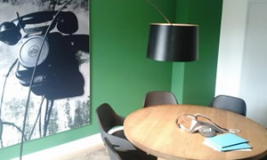
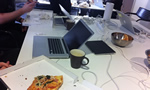

In this position you will work on our main web site, related projects, internal tools, and experiments. Our development is based on Rails and Javascript, and we combine a mix of agile practices, collaboration and code reviews to get things done.
We believe in convention over configuration, iterative development, design-first, clean APIs and peer code reviews. We ♥ testing. We're hackers, engaged by things like Open Data, embedded hardware and hack day projects.
We have a small team of A-players who like to solve challenging front-end problems. We're really into visualizations and analytics, and enjoy playing with Graphite and have several infoscreens around the office. We believe in learning and coding together, we're not afraid of new tools or new techniques. We like a simple release process and enjoy focusing on one thing at a time.
No cover letter required. Simply send your CV and a link to your Github account or code examples to Petra.RaguthTscharner@local.ch.
Questions about the job can be sent directly to the engineering team lead, Jeremy Seitz.
We take part in Switzerland's developer community. Our engineers regularly attend:
Additionally we often host a Ruby Hack night in our office.
local.ch is Switzerland's phonebook directory. Available as printed phone book, online and on mobile devices. Our core competence is to bring people and businesses together.

With a total of 3.6 million unique visitors and around 15 million visits per month, local.ch is one of Switzerland's top websites.
local.ch ag, Konradstrasse 12
CH-8005 Zürich, Switzerland

From time to time we organise internal Hackdays where everyone can work on his/her own projects and ideas. We enjoy the freedom and the results at the end of the day are always amazing.
Read about our last Hackday (German only) »
Visualization of Swiss Addresses